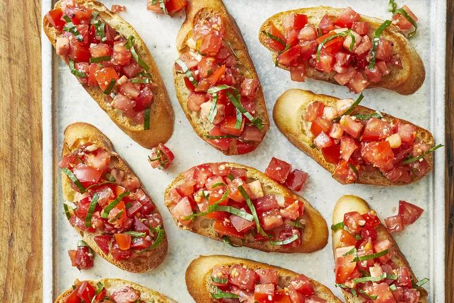

Balsamico Bruschetti

Balsamico Bruschetti
Bruschetti (pronouced brew-SKET-ti) is an Italian appetizer or antipasti that starts with a base of toasted or grilled bread. The bread is then served warm either with a topping spooned over or with a topping on the side so each person can build their own bruschetti. Bruschetti is meant to be served as a hand-held finger food, large enough for one or two bites.
Ingredients
1 loaf French bread, cut into 1/4-inch slices
1 tablespoon extra-virgin olive oil
8 roma (plum) tomatoes, diced
⅓ cup chopped fresh basil
1 ounce Parmesan cheese, freshly grated
2 cloves garlic, minced
1 tablespoon good quality balsamic vinegar
2 teaspoons extra-virgin olive oil
¼ teaspoon kosher salt
¼ teaspoon freshly ground black pepper
Steps
- Preheat oven to 400 degrees F (200 degrees C). Brush bread slices on both sides lightly with 1 tablespoon oil and place on large baking sheet. Toast bread until golden, 5 to 10 minutes, turning halfway through.
- Meanwhile, toss together tomatoes, basil, Parmesan cheese, and garlic in a bowl. Mix in balsamic vinegar, 2 teaspoons olive oil, kosher salt, and pepper.
- Spoon tomato mixture onto toasted bread slices and serve immediately.
Return to top